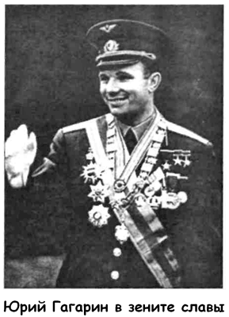
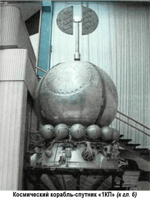

Альтернатива-4: Гагарин не был первым
Не так давно, к 40-летию полета Юрия Гагарина в космос, на страницах ряда периодических изданий и информационных сайтов сети Интернет вновь появились «разоблачительные» статьи о том, будто бы Гагарин не был первым советским космонавтом.
В интервью «Интерфаксу» некто Михаил Руденко, называющий себя инженером-экспериментатором ОКБ-456, сообщил, что в период с 1957 по 1959 годы с космодрома Капустин Яр были запущены баллистические ракеты, пилотируемые летчиками Дедовских, Шабориным и Митковым. Все эти летчики погибли и их фамилии никогда официально не упоминались.
«По сведениям Руденко, — сообщает «Интерфакс», — эти летчики участвовали в так называемых суборбитальных полетах, то есть они должны были не совершить целый виток вокруг планеты, что впоследствии выполнил Гагарин, а лететь по параболе. Причем Дедовских, Шаборин и Митков были обычными летчиками-испытателями и не проходили никакой специальной подготовки».
Истории, подобные этой, появляются в печати с завидной регулярностью. И если при советской власти публикации о «тайных жертвах советской космонавтики» были недоступны нашему читателю, то теперь никаких цензурных ограничений на разного рода «сенсации» нет.
Откуда же возник миф о жертвах советской космонавтики?
Оказывается, впервые обвинения в сокрытии факта гибели своих космонавтов против Советского Союза были выдвинуты еще до полета Гагарина. В книге воспоминаний руководителя отряда космонавтов генерал-лейтенанта авиации Николая Каманина, представляющей из себя опубликованные дневники, читаем запись от 12 февраля 1961 года:
«После пуска ракеты на Венеру 4 февраля многие на Западе считают, что мы неудачно запустили в космос человека; итальянцы даже будто бы «слышали» стоны и прерывистую русскую речь. Все это совершенно беспочвенные выдумки.
На самом деле мы упорно работаем над гарантированной посадкой космонавта. С моей точки зрения, мы даже излишне осторожны в этом. Полной гарантии успешного первого полета в космос не будет никогда, а некоторая доля риска оправдывается величием задачи…»
Старт 4 февраля 1961 года действительно нельзя назвать удачным. Это была первая попытка отправить автоматическую станцию к Венере. Ракета-носитель «Молния» вывела станцию в космос, однако не произошло включение разгонного блока, и станция осталась на околоземной орбите.
Советское правительство по заведенной «традиции» не захотело официально признавать неудачу, и с сообщением ТАСС было на весь мир объявлено о запуске тяжелого спутника и выполнении поставленных при этом научно-технических задач.
Кстати, именно неоправданная во многих случаях завеса секретности, окружавшая отечественную космическую программу, порождала огромное количество слухов и домыслов — и не только в среде западных журналистов, но и среди самых обыкновенных советских граждан.
Александр Бушков в книге «Россия, которой не было» приводит историю, услышанную им в молодости: будто бы между полетом Германа Титова (6 августа 1961 года) и полетом Андрияна Николаева (11 августа 1962 года) состоялся еще один старт — многоместного корабля с тремя космонавтами на борту. Дескать, этот корабль потерпел аварию и упал в глухом уголке Татарской АССР, а пилоты погибли. Соответственно, инцидент был засекречен, а все нечаянные свидетели дали подписку о неразглашении…
Впрочем, вернемся к нашим баранам, то бишь к западным журналистам Небольшое расследование показало, что первое известное сообщение, посвященное «жертвам красного космоса», действительно было озвучено итальянцами — в декабре 1959 года итальянское телеграфное агентство «Континенталь» распространило заявление некоего высокопоставленного чешского коммуниста о том, что в Советском Союзе с 1957 года осуществлен ряд запусков пилотируемых баллистических ракет. Один из пилотов по имени Алексей Ледовский погиб 1 ноября 1957 года в ходе такого суборбитального запуска. (Обратите внимание, в современной версии старой байки фамилия изменена на Дедовских — последствия плохого перевода.) Развивая тему, агентство назвало еще три фамилии «погибших» космонавтов: Сергея Шиборина (погиб 1 февраля 1958 года), Андрея Миткова (погиб 1 января 1959 года) и Марии Громовой (погибла 1 июня 1959 года). При этом указывалось, что пилот Громова погибла не в ходе полета на баллистической ракете, а в результате аварии прототипа орбитального самолета с ракетным двигателем.
Примечательно, что совершенно независимо от итальянцев, но в то же самое время знаменитый пионер ракетостроения Герман Оберт заявил, что располагает данными о пилотируемом суборбитальном запуске, состоявшемся на полигоне Капустин Яр в начале 1958 года и закончившемся гибелью пилота. Эту информацию он якобы получил, работая на американскую космическую программу в Хантсвилле (штат Алабама).
Однако если Герман Оберт был весьма осторожен в своих высказываниях, подчеркнув, что знает о «космической катастрофе» с чужих слов и не может ручаться за правдивость этой информации, то агентство «Континенталь» выдавало на-гора одну сенсацию за другой. Итальянские корреспонденты рассказывали то о «лунном корабле», взорвавшемся на стартовом столе сибирского космодрома «Спутникград», то о готовящемся секретном космическом рейсе двух советских пилотов… Поскольку ни одна из «сенсаций» не нашла подтверждения, источникам и сообщениям «Континенталь» перестали доверять. Но у «фабрики слухов» (так называют подобные конторы на Западе) вскоре появились последователи.
В октябре 1959 года журнал «Огонек» и одна из московских газет поместили фотографии летчиков-испытателей Белоконева, Качура, Грачева, Михайлова и Завадовского.
Журналист «Ассошиейтед Пресс», перепечатавшего материал, почему-то заключил, что на снимках изображены будущие советские космонавты. Поскольку впоследствии эти фамилии так и не появились в официальных сообщениях ТАСС, был сделан «логичный» вывод о гибели этих пятерых в ходе ранних стартов, закончившихся катастрофой.
Более того, буйная фантазия журналистов так разыгралась, что для каждого из них придумали отдельную версию гибели с огромным количеством совершенно невероятных пoдробностей.
Так, после запуска 15 мая 1960 года первого корабляспутника «1КП» западные СМИ утверждали, что на его борту находился пилот Завадовский, погибший из-за сбоя в системе ориентации, выведшей корабль на более высокую орбиту.
Мифический космонавт Качур нашел свою смерть 27 сентября 1960 года во время неудачного запуска очередного корабляспутника, орбитальный полет которого должен был состояться во время визита Никиты Хрущева в Нью-Йорк.
Якобы Хрущев имел при себе демонстрационную модель пилотируемого космического корабля, которую он должен был с триумфом показать западным журналистам после получения сообщения об удачном полете и возвращении космонавта.
Тут следует сказать, что советские дипломатические, службы сами создали нездоровую атмосферу ожидания какого-то громкого «события», намекнув американским журналистам, что 27 сентября произойдет нечто «потрясающее».
При этом разведка сообщала, что советские корабли слежения за космическими аппаратами заняли позиции в Атлантическом и Тихом океанах. Советский моряк, сбежавший в описываемый период, подтвердил, что готовится космический запуск.
Постучав ботинком на Генеральной Ассамблее ООН, 13 октября 1960 года советский лидер покинул Америку, но ничего так и не произошло. Официальных заявлений от ТАСС также не поступало. Разумеется, подобная «тактика замалчивания» немедленно принесла свои плоды: журналисты немедленно раструбили на весь мир о новой катастрофе, постигшей советскую космическую программу.
Только теперь, когда многие архивы открыты, а многие данные рассекречены, стало известно, что очередной запуск и в самом деле планировался на 26–27 сентября 1960 года, только в космос должен был лететь не космонавт, а «1М» — первая автоматическая станция для изучения Марса.
Однако две попытки отправить эту станцию хотя бы на околоземную орбиту, предпринятые 10 и 14 октября, закончились бесславно: в обоих случаях запуск сорвался из-за аварии ракеты-носителя «Молния» на участке выведения.
Следующая «жертва космической гонки» пилот Грачев погиб, по утверждению западных СМИ, 15 сентября 1961 года.
О его ужасной смерти поведала уже знакомая нам фабрика слухов «Континенталь». В феврале 1962 года это агентство озвучило информацию, поступившую от «пражского корреспондента», из которой вытекало, что в сентябре 61-го на космическом корабле «Восток-3» были запущены два советских космонавта; якобы этот старт был приурочен к XXII съезду КПСС, и в ходе полета корабль должен был облететь Луну и вернуться на Землю, но вместо этого «затерялся в глубинах вселенной».
Неудавшийся запуск «венерианской» станции 4 февраля 1961 года породил новую волну слухов. Тогда впервые заявили о себе два брата-радиолюбителя из итальянского города Торре Берте, которые утверждали, что на частоте 22 МГц им удалось перехватить телеметрические радиосигналы биения человеческого сердца. Этот «инцидент» связывают с именем мифического космонавта Геннадия Михайлова, якобы погибшего на орбите.
Но и это еще не все. В 1965 году газета «Карьера делла Сера» опубликовала продолжение истории двух братьев-радиолюбителей.
На этот раз они рассказали сразу о трех «фактах» перехвата странных сигналов, пришедших из космоса.
Первый перехват состоялся 28 ноября 1960 года — радиолюбители услышали звуки «морзянки» и просьбу о помощи на английском языке. Во время второго перехвата от 16 мая 1961 года им удалось выловить в эфире сбивчивую речь русской женщины-космонавта. При третьем радиоперехвате от 15 мая 1962 года были записаны переговоры троих русских пилотов (двух мужчин и женщины), погибающих в космосе. В записи сквозь треск помех можно различить следующие фразы: «Условия ухудшаются… почему вы не отвечаете?… скорость падает… мир никогда не узнает о нас…»
Впечатляет, не правда ли? Чтобы окончательно уверить читателя в подлинности излагаемых «фактов», итальянская газета называет имена погибших. Первой «жертвой» в этом списке был пилот Алексис Грацов (может быть, все-таки Алексей Грачев?). Женщину-космонавта звали Людмила.
Среди троицы, погибшей в 1962 году, называют почему-то только одного — пилота из «Огонька» Алексея Белоконева.
В том же году «сенсационную» информацию итальянской газеты перепечатал американский журнал «Риджерс Дайджест». «Косвенное подтверждение» она нашла еще через четыре года в книге «Аутопсия космонавта», написанной патологоанатомом Сэмом Стонебрейкером; в ней автор утверждал, что прошел подготовку астронавта и летал в космос на «Джемини 12-А», чтобы получить образцы тканей мертвых советских пилотов, покоящихся в корабле на орбите с мая 1962 года Возможно, именно эту историю пересказали писателю Александру Бушкову те из наших сограждан, кто имел возможность в советские времена читать западную прессу.
Попадались в списке мифических космонавтов и вполне реальные люди, работавшие на космическую программу.
Так, Петр Долгов был объявлен космонавтом, погибшим во время катастрофы орбитального корабля серии «Восток» 11 октября I960 года. На самом же деле полковник Петр Долгов погиб 1 ноября 1962 года, совершая экспериментальный прыжок с парашютом из стратостата «Волга», поднятого на высоту 28,6 километра. Когда Долгов покидал стратостат, треснул лицевой щиток гермошлема — смерть наступила мгновенно.
Я привожу здесь все эти многочисленные и откровенно вымышленные подробности не для того, чтобы как-то поразить читателя или заставить его усомниться в достоверности известной нам истории космонавтики. (Хотя, должен признаться, фрагменты радиоперехвата итальянских братьев, найденные в Интернете, произвели на меня известное впечатление.) Обзор слухов и мифических эпизодов понадобился мне для того, чтобы показать, сколь пагубна была для репутации отечественной космической программы и Советского Союза в целом политика замалчивания и неприкрытого вранья. Нежелание и неумение признавать ошибки сыграли с нами злую шутку: даже когда ТАСС выступало с совершено правдивым заявлением, ему отказывались верить, выискивая противоречия или пытаясь читать «между строк».
Дошло даже до того, что поставлен под сомнение сам факт полета Юрия Гагарина!
Около десяти лет назад в Венгрии была опубликована книга «Гагарин — космическая ложь?». Ее автор публицист Иштван Немене взял на себя смелость утверждать, что Гагарин вовсе не облетал нашу планету 12 апреля 1961 года. «Восток поднялся в космос на несколько дней раньше, — писал Немене. — На борту его находился сын знаменитого авиаконструктора, не менее известный летчик-испытатель Владимир Ильюшин».
Якобы после приземления Ильюшин выглядел настолько плохо, что его никоим образом нельзя было демонстрировать миру. Наоборот, его требовалось надолго, лучше всего навсегда, убрать с глаз публики. И в том же году Владимир Ильюшин попадает в тяжелую автомобильную аварию. На роль космонавта № 1 был срочно подобран симпатичный парень с жизнерадостной улыбкой и прекрасными анкетными данными. А чтобы тайна невзначай впоследствии не всплыла, Гагарину устроили катастрофу во время тренировочного полета на самолете «МиГ-15УТИ»…
Несмотря на всю абсурдность выкладок венгерского «публициста», книга произвела определенный эффект на публику, ведь Немене — далеко не единственный автор, называющий Ильюшина первым космонавтом. 11 апреля 1961 года в британской газете «Дейли Уоркер» появилась заметка ее московского корреспондента Денниса Огдена, в которой сообщалось о том, что 7 апреля на космическом корабле «Россия» совершил орбитальный полет сын авиационного конструктора, летчик-испытатель Владимир Ильюшин.
Советские официальные органы выступили с опровержением.
Они, в частности, сообщили, что еще в июне 1960 года Ильюшин попал в автомобильную катастрофу и вынужден был долго лечиться: сначала у нас в стране, а затем в Китае. Вероятно, его отъезд на лечение за рубеж и был воспринят корреспондентом как следствие неудачного полета в космос.
Но советским заявлениям и опровержениям уже никто не верил. История космического полета Ильюшина обрастала подробностями. Более того, широкие массы настолько в нее уверовали, что именно Владимир Ильюшин, а не Юрий Гагарин был назван первым космонавтом планеты в «Книге рекордов Гиннесса» издания 1964 года.
Постепенно интерес к этой неподтвержденной истории угас, и она возродилась только благодаря усилиям Немене. В 1999 году свою страницу в легенду вписал доктор Эллиотт X. Хаймофф. Он выступил как продюсер «документального» фильма, посвященного Владимиру Ильюшину.
На изготовление фильма было потрачено пять лет и полмиллиона долларов, но он себя вполне окупил, поскольку его приобрели в свое пользование такие гиганты информационного рынка, как «Общественный радиовещательный канал Соединенных Штатов», канал «Дискавери», «Горизонт» и «Канадская радиовещательная корпорация».
Согласно новой версии, изложенной в фильме, Владимир Ильюшин действительно стартовал с космодрома Байконур 7 апреля 1961 года. Затем на космическом корабле «Восток» он совершил три витка вокруг Земли, но утратил при этом связь с наземными службами, в результате чего ему пришлось перейти на ручное управление. В конце концов он совершил аварийную посадку в Китае, где и был арестован местными властями. Лишь через год Ильюшина передали Советскому Союзу по секретному соглашению между двумя странами.
Перед нами классический пример пересказа старой легенды на новый лад. Создатели фильма учли несоответствия версии Немене исторической действительности, ведь летчик-испытатель Владимир Ильюшин жив и, более того, сделал блестящую карьеру в авиационном КБ Павла Сухого.
При этом они соглашаются с венгерским «публицистом» в оценке причин гибели Гагарина: мол, с какого-то момента космонавт стал слишком независим и мог сообщить миру правду о первом пилотируемом полете на орбиту, а потому сотрудники КГБ ликвидировали его, подстроив авиационную катастрофу.
Впрочем, сам фильм не содержит никаких документальных свидетельств этому. Все фантастические утверждения основываются на трех интервью: с создателем легенды Деннисом Огденом, с капитаном Анатолием Грущенко, заявившим, что видел пленку о старте Ильюшина, и с репортером Гордоном Феллером, работавшим с документами об орбитальном полете Ильюшина, якобы хранящимися в Кремлевском архиве.
Подобный подход к историческим расследованиям не выдерживает ни малейшей критики. Если бы полет Ильюшина состоялся, то утечка информации в той или иной форме произошла бы. Сегодня, когда опубликованы мемуары и дневники многих непосредственных участников событий, когда гриф «Совершенно секретно» снят с огромного количества документов, связанных с советской космической программой, неминуемо всплыли бы какие-то детали, неудобные фотографии, стали бы заметны «подчистки». Но ничего этого нет и в помине. Больше того, отсутствуют даже сведения о том, что Ильюшин когда-нибудь проходил специальную подготовку в отряде космонавтов, что утаить было бы вообще невозможно, да никому и не нужно…
Все слухи о советской космонавтике, мелькавшие в западной прессе, начиная с середины 60-х годов, взял на себя труд систематизировать американский эксперт по вопросам космической техники Джеймс Оберг. На основании собранного материала он написал статью «Фантомы космоса», впервые опубликованную в 1975 году. Ныне эта статья дополнена новыми материалами и выдержала множество переизданий.
Имея славу ярого антисоветчика, Оберг тем не менее весьма скрупулезен в отборе сведений, касающихся секретов советской космической программы, и очень осторожен в конечных выводах. Не отрицая того факта, что в истории советской космонавтики имеется еще много «белых пятен», он делает заключение, что истории о космонавтах, погибших во время старта или на орбите, неправдоподобны и являются плодом фантазии, разгоряченной режимом секретности.
Мы не будем оспаривать мнение Оберга по этому вoпpoсу, ведь оно полностью совпадает с нашим.
Космонавты действительно погибали и до полета Гагарина, и после. Вспомним их и склоним головы перед Валентином Бондаренко (погиб 23 марта 1961 года из-за пожара в сурдобарокамере), Владимиром Комаровым (погиб 24 апреля 1967 года из-за катастрофы при посадке космического корабля «Союз-1»), Георгием Добровольским, Владиславом Волковым и Виктором Панаевым (погибли 20 июня 1971 года из-за разгерметизации спускаемого аппарата корабля «Союз-11»). При этом, однако, следует запомнить одно: в истории советской космонавтики НЕ было и НЕТ тайных трупов.
Для тех циников, которые не верят документам, мемуарам и дневникам, а опираются исключительно на «логику» и «здравомыслие», приведу один циничный, но абсолютно логичный довод: в условиях «космической гонки», которая имела место в начале 60-х годов, совершенно не имело значения, вернется первый космонавт на Землю или нет, главное — объявить о собственном приоритете. Поэтому если бы на корабле-спутнике «1-КП» находился пилот Завадовский, как нас пытаются уверить отдельные безответственные авторы, то сегодня именно Завадовский был бы первым космонавтом планеты. Разумеется, его оплакивал бы весь мир, но факт оставался бы фактом: советский человек первым побывал в космосе.
Готовность советского правительства принять любой вариант развития событий подтверждает и недавно рассекреченный документ. Это — записка, направленная в ЦК КПСС 30 марта 1961 года от имени ответственных лиц, занятых в космической программе. Приведу лишь некоторые выдержки из нее:
«Докладываем […] проведен большой объем научно-исследовательских, опытно-конструкторских и испытательных работ как в наземных, так и летных условиях. […] Всего было проведено семь пусков кораблей-спутников «Восток»: пять пусков объектов «Восток-1» и два пуска объектов «Восток-ЗА» […] Результаты проведенных работ по отработке конструкции корабля-спутника, средств спуска на Землю, тренировки космонавтов позволяют в настоящее время осуществить первый полет человека в космическое пространство.
Для этого подготовлены два корабля-спутника «Вос ток-ЗА». Первый корабль находится на полигоне, а второй подготавливается к отправке.
К полету подготовлены шесть космонавтов.
Запуск корабля-спутника с человеком будет произведен на один оборот вокруг Земли и посадкой на территории Советского Союза на линии Ростов — Куйбышев — Пермь. […] Считаем целесообразным публикацию первого сообщения ТАСС сразу после выхода корабля-спутника на орбиту по следующим соображениям:
а) в случае необходимости это облегчит быструю организацию спасения;
б) это исключит объявление каким-либо иностранным государством космонавта разведчиком в военных целях…»
А вот другой документ на ту же тему. 3 апреля ЦК КПСС принял постановление «О запуске космического корабля-спутника»:
«1. Одобрить предложение […] о запуске космического корабля-спутника «Восток-3» с космонавтом на борту.
2. Одобрить проект сообщения ТАСС о запуске космического корабля с космонавтом на борту спутника Земли и предоставить право Комиссии по запуску в случае необходимости вносить уточнения по результатам запуска, а Комиссии Совета Министров СССР по военно-промышленным вопросам опубликовать его».
Как решили, так и сделали. В отличие от всех предыдущих запусков, сообщение ТАСС, посвященное первому полету человека в космос, было озвучено еще до того, как Гагарин вернулся на Землю. А дальше — как решила бы Комиссия по запуску…
У вас еще остались вопросы?..
Что же касается вынесенной в заголовок этого раздела «альтернативы», то тут можно сказать следующее. Конечно же, Юрий Гагарин не был каким-то исключительным пилотом или таким человеком, чтобы не оставить выбора предстартовой Госкомиссии.

«Нас было много на челне», — продекламировал как-то Герман Титов, когда речь зашла об отборе в первый космический отряд. Их было три с половиной тысячи — военных летчиков, добровольцев, с весом, не превышающим 68 килограммов, что являлось обязательным условием. Отобрали двадцать, примерно равных по всем критериям возрастного, медицинского и летно-профессионального отбора.
В августе 1960 года выделили в отряде «ударную шестерку»: Юрий Гагарин, Валентин Варламов, Анатолий Карташов, Андриян Николаев, Павел Попович, Герман Титов. Впоследствии из-за травм, полученных на тренировках, Варламова и Карташова заменили Валерием Быковским и Григорием Heлюбовым.
18 января 1961 года генерал Каманин составил не подлежащий оглашению список кандидатов в такой последовательности:
Гагарин, Титов, Нелюбов, Николаев, Быковский, Попович. Любой из этой шестерки был готов и мог стать первым космонавтом. Однако у Гагарина имелось преимущество: в силу черт своего характера он вызывал всеобщую симпатию, и за ним признавали право на лидерство.
Из недавно опубликованных мемуаров стал известен такой любопытный факт. Будущим космонавтам было предложено высказаться о «первом»: свои суждения, свои прикидки, конфиденциально и письменно. Девятнадцать членов отряда назвали Юрия Гагарина. Это было осенью 1960 года…
